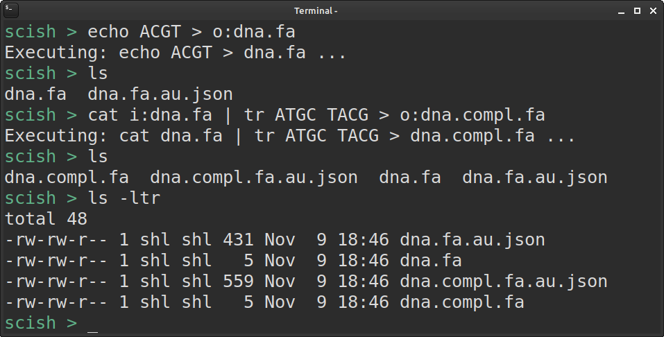

SciCommander - track provenance of any shell command
I haven’t written much about a new tool I’ve been working on in some extra time: SciCommander .
I just presented a poster about it at the Swedish Bioinformatics Workshop 2023 , so perhaps let me first present you the poster instead of re-iterating what it is (click to view large version):
{kind=link}
New version not requiring running the scicmd command
I got a lot of great feedback from numerous people at the conference,
most of who pointed out that it would be great if one could start
scicommander as a kind of subshell, inside which one can run commands as
usual, instead of running them via the scicmd -c command.
We were also discussing about ways to automatically figure out which parts of the command are input- and output files, so that one would not need to specify that with i: and o: markers.
Today, I managed to implement a solution for the first of these wishes, by using some clever Bash tricks that people out on the internet recommended. These are published in the last version 0.3.3, out on the Python Package Index (PyPI) now!
So now, given that you have a bash environment, you can install the latest SciCommander with:
pip install -U scicommander
… and then enter the SciCommander shell with:
scishell
Now, executing commands inside will look almost as usual … only the
i: and o: markers are still required (but working on fixing that too
- stay tuned! :) ):

Have you tried it out? Feedback?